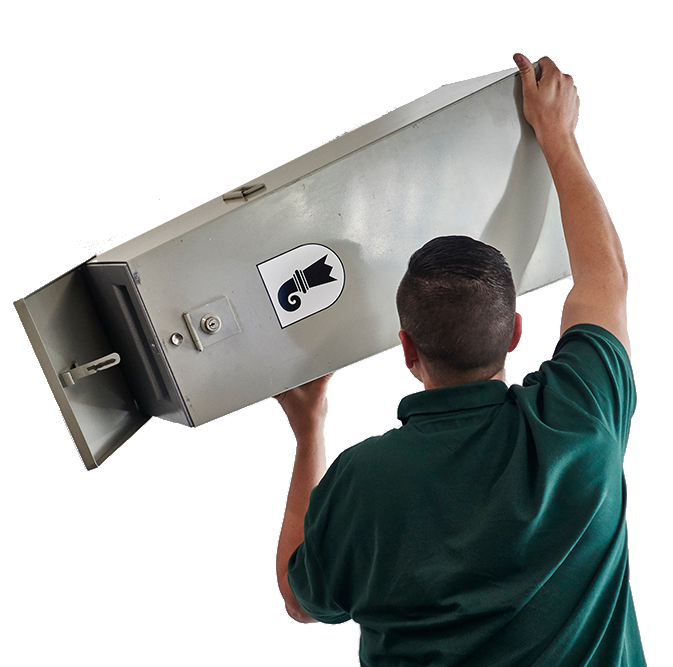

Wahlen BS 2016
Am 23. Oktober 2016 wählt Basel-Stadt eine neue Regierung und ein neues Parlament. Bleibt Basel weiterhin in linken Händen oder gibt es einen Machtwechsel? Alles, was Sie über die Gesamterneuerungswahlen wissen müssen.
Am 23. Oktober 2016 wählt Basel-Stadt eine neue Regierung und ein neues Parlament. Bleibt Basel weiterhin in linken Händen oder gibt es einen Machtwechsel? Alles, was Sie über die Gesamterneuerungswahlen wissen müssen.
Steht die rot-grüne Mehrheit auf der Kippe? Muss Hans-Peter Wessels in den zweiten Wahlgang? Und wer wird Guy Morin beerben? Die repräsentative Wahlumfrage der TagesWoche und der «bz Basel» offenbart manche Überraschung.
Hier kommt noch Text.
 Fraktionspräsidentin
Fraktionspräsidentin
Beatriz Greuter
Fraktionsgrösse
33, davon 16 Frauen

Mitglied bei der SP zu sein bedeutet, Teil einer Bewegung zu sein, die seit Jahrzehnten konstruktiv und beharrlich an sozialen und ökologischen Fortschritten arbeitet.

 Fraktionspräsident
Fraktionspräsident
Lorenz Nägelin
Fraktionsgrösse
14, davon 1 Frau
 Gianna Hablützel-Bürki
Gianna Hablützel-Bürki
ehemalige Profi-Degenfechterin
 Andreas Bernauer
Andreas Bernauer
ehemaliger Betreiber der Piano-Bar
 Sascha Torriani
Sascha Torriani
Tatortreiniger

 Fraktionspräsidentin
Fraktionspräsidentin
Brigitta Gerber
Fraktionsgrösse
13, davon 6 Frauen
 Raffaela Hanauer
Raffaela Hanauer
Co-Präsidentin Junges Grünes Bündnis, Studentin
 Rita Schiavi
Rita Schiavi
Gewerkschaftlerin Unia
 Michel Steiner
Michel Steiner
Gassenarbeiter Schwarzer Peter

 Fraktionspräsident
Fraktionspräsident
Andreas Zappalà
Fraktionsgrösse
13, keine Frau
 Daniel Seiler
Daniel Seiler
Unternehmer, Vizepräsident Basler FDP
 Angelo Gallina
Angelo Gallina
Präsident Boxclub Basel
 Nadine Gautschi
Nadine Gautschi
Assistentin der Direktion Ballettschule Theater Basel, BVB-Verwaltungsrätin

 Fraktionspräsident
Fraktionspräsident
Michael Koechlin
Fraktionsgrösse
10, davon 1 Frau
 Corinne Eymann
Corinne Eymann
kaufmännische Angestellte, Frau des zurücktretenden Erziehungsdirektors Christoph Eymann
 Alex Ebi
Alex Ebi
ehemaliger Profi-Handballer, RTV-Präsident

 Fraktionspräsidentin
Fraktionspräsidentin
Andrea Knellwolf
Fraktionsgrösse
8, davon 4 Frauen
 Balz Herter
Balz Herter
Betriebswirtschafter, ehemaliger Grossrat
 Manuela Caroline Hobi
Manuela Caroline Hobi
Juristin, Parteileitung CVP Basel-Stadt

 Fraktionspräsident
Fraktionspräsident
Dieter Werthemann
Fraktionsgrösse
5, davon 2 Frauen
 Esther Keller
Esther Keller
Autorin, ehemalige Telebasel-Moderatorin
 Karl Linder
Karl Linder
Unternehmer, Mitglied von Kulturstadt Jetzt.